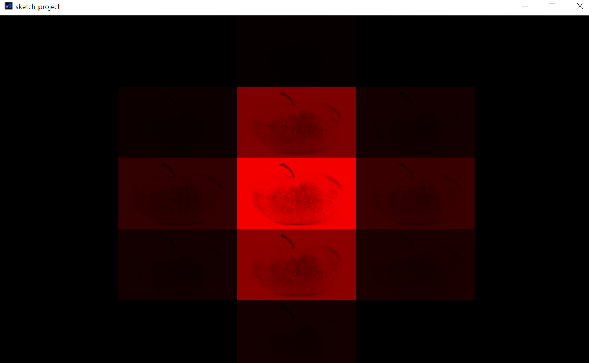
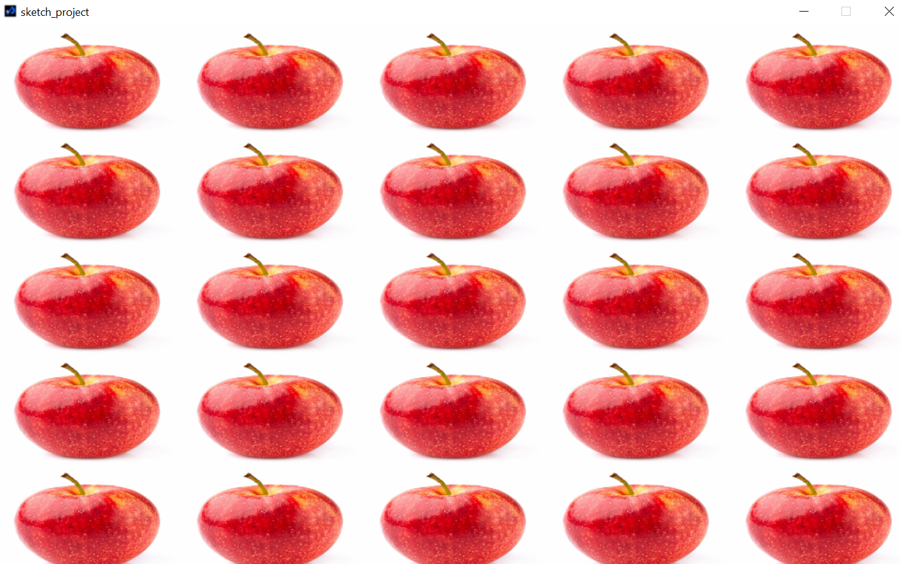

Kamilla MazhenovaI don't have much of experience in programming. I learned a bit about Python as part of foundation year. I'm very interested and open to learn more and expand my knowledge. |
||
|
|
||
Bootcamp 2021: Apple ImageMy first programming project, concluding the 2 week Programming Bootcamp at City 2021. This Processing project demonstrates a comprehensive understanding of the use of images, loops and shadows. I created a multiple images of apple, where you can regulate shadow based on position of your mouse on the screen. Also, using println, you can see "Looping!" as mouse moves. Pressing anywhere on the screen, you can remove shadow and add it back by pressing again. Check out the code on Github: https://github.com/kamillacity/projectbootcamp | Watch a video of the project | |
|   | ||